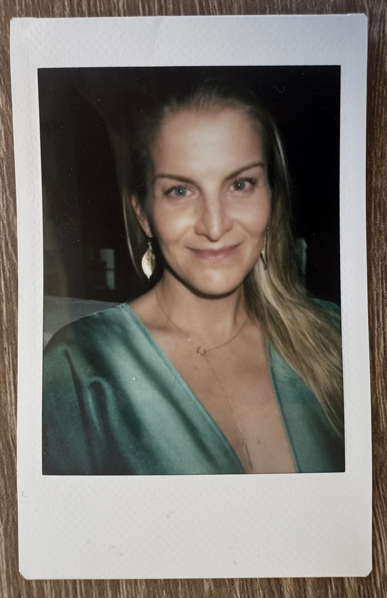

What if you stopped settling for the life that makes sense — and said yes to trusting the one that calls you?
For the spiritually attuned soul who has grown weary of the probable — and is ready to expand into the possible.
Experience deep insight, clarity, and guidance, supporting your nervous system to align with your soul's truth.
Some changes don't happen in a single session. They happen when someone is truly met, where you're held in what opens, accompanied through what arises, and partnered with in what comes next.
Soul Sessions with Allison is a three-session container designed for people who are genuinely at stake for their own transformation. One session opens the Akashic Records — a direct encounter with your soul's truth, the patterns beneath your patterns, and what is wanting to move in your life. The other two sessions weave together intuitive guidance, somatic support, and integral coaching to prepare you, integrate what emerges, and deepen the change into something real and lasting.
I don't do readings and disappear. I am committed to what matters to you (and to you mattering to the world) and to partnering with you in whatever comes up.
Clients often report moving through life with more clarity, courage, open-heartedness, and love. Here is what shifts:
Feeling crystal clear about the direction ahead
A weight lifted — relief that is felt in the body
A deep sense of empowerment, direction, and purpose
More connected to yourself, your soul, and your body
Stopping the apologies for who you are and what you want
No longer tolerating what is no longer in alignment
Imagine the Akashic Records as a celestial library of all that is. Akash means space, or ether, and it is a space that is a compendium of all that is, was, and ever will be. Unlike channeling specific entities or deities, Akashic readings are about your soul. Your soul truth. What is wanting to move through you.
The Akashic Records do not deal in shoulds. They support coming into the highest possible energetic alignment with what already is, so that you can be in tune with your own frequency and move forward with greater clarity, love, and compassion, releasing self-judgment and blame.
Akashic Records readings are incredibly powerful. They are a mirror to your soul. And it is your soul that is inhabiting your body and your consciousness. Why are you here on Earth at this time?
While Akashic Records readings might not tell you a specific purpose or something to do, they will support you in coming into contact with yourself. As always, there is the you that is doing, the you that is feeling, and the you that is observing.
"Allison is a gifted seer of inner and outer dimensions. I deeply appreciated her tender, thoughtful, and reverent holding of me and the information that came through, as well as her ability to translate nuance, complexity, and care. Allison's reading helped me orient to a more expansive and balanced perspective on some recurring life themes I was navigating. Highly recommended!"
— Katharine"Working with Allison was a profound experience of safety, depth, and clarity. She helped me see something I had been hiding from myself, and the way she mirrored that truth landed exactly where it needed to, supporting my journey in a powerful way. Her presence, lived experience, and ability to lovingly call me into deeper receiving are rare, and I felt fully seen throughout our work together."
— Loraine"Allison has read for me twice, and each session was profoundly impactful. She helped me connect deeply with myself and settle into a sense of peace the moment she opened my records, offering clear wisdom and powerful images that I continue to return to for insight and guidance. In our second session, she met something deeply personal and vulnerable with gentleness, grounded wisdom, and practical support, helping me transform an experience that once felt painful into one I now feel grateful for."
— Heather
Allison Burtch has been connected to the divine from an early age. At four years old she sensed her sister's illness and death before anyone else knew. She grew up deeply religious, yet through the trappings of religion still experienced the presence of the divine and the interconnection of all life. Her mother taught her to love trees.
She spent over a decade at the forefront of technology and culture: advancing innovation at Disney+, leading emerging technology initiatives at UNICEF in East Africa, biking across the United States, traveling by train from Kazakhstan to Beijing, holding residencies in Europe and South America. She holds a graduate degree from NYU and has a keen awareness of the callings of leadership, understanding from the inside the particular loneliness that can come with it.
As the oldest in a large family, she learned to be hyper-responsible and attuned to the energy of the room. It wasn't until her body started breaking down that she learned the most important attunement of all: to the inner callings of the soul.
Since her first ayahuasca experience in 2014, Allison has walked a rigorous and expansive path through plant medicine and shamanic training, somatic and spiritual practice, feminine embodiment, and deep study of the body, breath, and soul.
In her work as an oracle and integral coach, Allison meets people where they are and accompanies them to where they have not yet allowed themselves to go. Often she finds that simply naming the truth of what is here brings deep relief.
She believes the ancient wound in humanity is the schism between men and women, and that spiritual repair for women begins with trusting in the goodness of men's hearts again. Allison walks with plants, trees, and animals, trusts the natural brilliance of our bodies, and loves music and dancing.
The name Allison means truthful one. It is a name she has grown into, in both the cost and the blessing.
She believes we are each living in the dream of our own choosing.
She is all in for life.
What are the Akashic Records and how do they work?
Imagine the Akashic Records as a celestial library of all that is. Akash means space or ether, and this library holds the compendium of all that was, is, and ever will be. Unlike channeling specific entities or deities, Akashic readings are about your soul — your truth — and what wants to move through you.
The Records don't deal in shoulds. They support you in coming into alignment with what already is, so you can move forward with greater clarity, love, compassion, and self-acceptance. Many clients experience a profound energetic cleansing — a light, positive, powerful flow that removes blockages and restores alignment with their own frequency.
Do I need to believe in anything for this to work?
We will speak about a higher power using the words God and Spirit. You are welcome to substitute this with higher power, "the universe," unconditional love, etc.
What's your cancellation or rescheduling policy?
I do not offer refunds. Requests for rescheduling are possible given 48 hours notice. All sessions must be completed within a month.
How long is a session?
Most sessions run about 60–90 minutes.
Do I get a recording?
Yes, each session is recorded so you can revisit your guidance anytime.
Will an Akashic Records reading tell me my purpose?
Readings may not always give a specific "to-do," but they act as a mirror to your soul. They help you connect with the parts of you that are doing, feeling, and observing, supporting deeper self-understanding and clarity.
How deep do we go?
Often times we can go very deep! But it is all in service of your highest good. Coming into alignment can involve confronting the Shadow — the aspects of yourself that are out of integrity, stuck, or distorted. While these moments can feel intense, they serve your thriving, your soul's expression in this lifetime, and the healing of patterns that no longer serve you.
What's the overall experience like?
Clients often report moving through life with more clarity, courage, open-heartedness, and love. It's an invitation to connect deeply with your beingness, release self-judgment, and engage more fully with the flow of your life.
How do I best prepare for my Akashic Records session?
Beforehand, really sit with what matters most to you right now. What are your burning questions? Can you sense any of the energies of what is underneath those questions?
I am all in for life. Committed. Devoted to the sacred sequence of what is unfolding.
I trust the mysterious breadcrumbs that led us to each other.
And I pray you would be blessed — and your soul nourished.